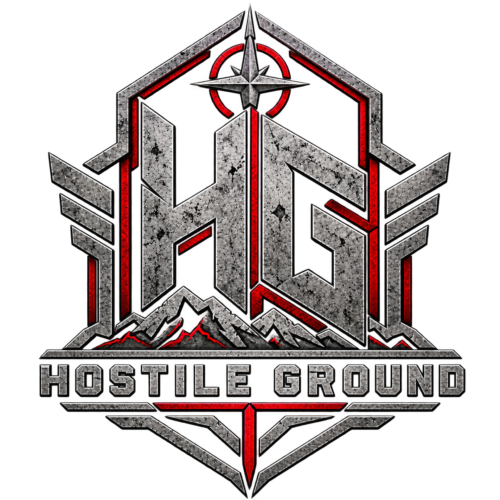

Player Intel / Player Guidance
Rules & Requirements
Official Hostile Ground Ruleset — Version 3, updated September 9, 2026. The complete rules are organized below in their original order. They remain subject to updates before LOCKBOX (January 16–17, 2027).

Official Ruleset & Download
Official — subject to updates before LOCKBOX.
Download Official Ruleset (PDF)
The rules below reproduce the full provisions and numbered items from Version 3 rather than condensed summaries. Minor references to an earlier document have been removed from the webpage wording; the original PDF remains unchanged.
Overview
Overview
This ruleset is intended to support competitive, safe, and enjoyable mil-sim airsoft play. Players should remember that the event
is recreational and should prioritize safety, sportsmanship, and the experience of other participants.
Event staff may adjust rules during gameplay when unforeseen circumstances require a change.
Find a Rule
1. General Rules, Safety Requirements & Age Requirements2. War Crimes / Rule Violations3. Blind Man / Corpsman Safety Calls4. Uniform Standards5. Faction Uniform Requirements6. Chronograph Standards & Weapon Systems7. Role Restrictions8. Weapon Classifications and FPS Requirements9. Melee / Silent Kills10. Ammunition/Magazine Restrictions11. Explosive Devices, IEDs, Grenades, and Smoke12. Approved Pyrotechnic Grenades.13. Low-Light / No-Light Operations14. Riot / Ballistic Shields15. Sportsmanship, Honor & Fair Play16. Player Searches17. Player Hits18. Medic Rules19. Aid Stations20. Mobile Respawn Points (MRPs) / Medic Barrels21. Player Respawns22. POW Camps and Rules23. Real Firearms24. Alcohol
1. General Rules, Safety Requirements & Age Requirements
1. ALL PLAYERS MUST HAVE A CURRENT WAIVER ON FILE WITH THE FIELD HOSTING THE EVENT
2. Only biodegradable (BIO) BBs may be used at Hostile Ground (HG) events.
3. Players are strongly encouraged to use eye protection that fully seals to the wearer’s face and meets the ANSI rating
specified ANSI rating (ANSI 787.1). Full-seal protection conforming to the facial contour is permitted.
4. Every player must carry a red “Dead Rag” with at least 50 square inches of visible material.
5. Every weapon must pass safety inspection. A minimum of three rounds will be fired over the chronograph, and staff may
require re-chronographing at any point, including during active play.
6. Only purpose-built airsoft guns are permitted. Conventional BB guns, converted BB guns, and guns intended to fire
metal BBs are prohibited.
7. In staging areas, pistols must remain holstered. Other weapons must have magazines removed, chambers cleared and
safety on.
8. Within the active AO, eye protection may only be removed in the FOB (Forward Operating Base) designated space.
9. No DRY FIRING in the parking area. Any firing of replicas must be in the AO or at the event chrono table. No exceptions.
10. Anyone moving through the AO—including observers, photographers, and non-player support personnel—must have a
valid waiver on file.
11. Players Must be 14 years of age to participate in HG events. Players under the age of 16 may participate with their legal
guardian participating in the event. This means the legal guardian must attend the event and not leave the minor
unaccompanied at any time.
12. Players 16-17 years of age must have a guardian participating in the event or fill out a transfer of guardianship to a player
18 years or older who is participating in-game with them. Form available for download from the discord.
13. Players older than 16 must have a notarized release form unless a guardian is on site to co-sign the required event
release forms.
2. War Crimes / Rule Violations
1. Rule violations may result in faction point deductions or detention via in-game mechanics of the POW camp(s).
2. When staff records a violation, they may request the player’s name for internal tracking; the identity is not intended for
public posting.
3. Safety violations receive greater point penalties than ordinary rules infractions.
4. Repeated safety violations, arguing with staff or event runners may result in ejection from the event.
3. Blind Man / Corpsman Safety Calls
1. If a player loses eye protection during a firefight, call “Blind Man.” The affected player should cover the face, keep the
head down, and remain protected until replacement eye protection is supplied.
2. When “Blind Man” is called, all players will echo the callout of “Blind Man” and immediately stop play: remove the
magazine, clear the chamber, place the weapon on safe, remain in position, and do not resume until staff gives both the
all-clear and the game-on command.
4. Uniform Standards
Uniform regulations exist to give the appearance of a cohesive unit and not give the appearance of a group of individuals. It is hoped that
this will provide all players with a better overall experience.
1. Only authorized uniforms may be worn unless staff announces an exception. Failure to meet the uniform requirement
can result in removal from play.
2. Tops must provide at least T-shirt coverage. Shirtless play and tank tops are not permitted.
3. Bottoms must be pants. No shorts are allowed.
4. Headgear and face coverings are faction-color controlled.
5. In bad weather, uniform rules may be relaxed, but worn clothing must still reflect faction color. The rules specify
OD green for ASC and tan/brown for PCF.
6. Tactical gear color is unrestricted unless an event-specific rule says otherwise.
7. Ghillie suits must match the faction’s base color family: green or tan.
8. Red shirts are reserved for Hostile Ground staff, photographers and observers.
9. Photographers and observers must remain visually distinct from combatants and should not wear military-style
uniforms.
5. Faction Uniform Requirements
Faction Authorized clothing / camouflage Gear
Ares Security Compact (ASC) Woodland; Desert Night; Multicam Tropic; MARPAT Woodland; Jungle Tiger Any gear color
Stripe; Ranger Green / OD; Pencott Greenzone; Kryptek Mandrake; A-TACS FG
Provisional Control Force Multicam OCP; Multicam Arid; MARPAT/AOR1; Desert MARPAT; Chocolate Any gear color
(PCF) Chip / 3-Color Desert; 6-Color Desert; Kryptek Highlander; A-TACS AU; Pencott
Badlands; Desert Tiger Stripe; Tan
6. Chronograph Standards & Weapon Systems
1. All replicas are chronographed with .20 g BBs, with hop-up turned off. Players may use other BB weights during
gameplay.
2. Any weapon using an external air supply must have a tournament lock or equivalent lock on its in-line regulator.
7. Role Restrictions
1. Faction and Squad leaders are responsible for ensuring their squads comply with event rules, class limits, ammunition
limits, and reloading restrictions.
2. A squad is defined as maximum of 12 players.
3. Factions may field up to four sniper/spotter teams, with no more than one sniper/spotter team assigned to a squad.
4. Factions may field up to four EOD specialists. Only designated EOD personnel may disarm or demolish explosive
objectives. No more than one EOD specialist may be assigned to a squad.
5. Each faction is allowed one squad level medic per five players with no more than one squad medic per squad.
6. Each faction may have one critical care medic for every thirty faction players in addition to squad level medics.
7. Each squad may field no more than two Squad Support Weapons (SSWs/LMGs).
8. Embedded “Mandate” members may perform any of the restricted roles as they choose.
8. Weapon Classifications and FPS Requirements
Replica Class 1 (General) includes pistols
• Consists of most rifles, pistols, shotguns, and sub-machine guns.
• 400 FPS limit (using 0.20g BB)
• 0 ft MED / NO MED
• Semi-automatic fire only.
Replica Class 2 (DMR) **Requires certification of class at chrono/inspection time.
• DMR (Designated Marksman Rifle) is a classification used for replicas that fall in between being a regular rifle and a
sniper rifle.
• Minimum barrel length is 16 inches.
• Must have a magnified optic attached.
• 450 FPS limit (using 0.20g BBs)
• 40 ft MED
• Semi-automatic fire only.
• Operators must carry a standard AEG or sidearm for targets inside the minimum engagement distance.
Replica Class 3 (LMG’s) **Requires certification of class at chrono/inspection time.
• Machine guns are replicas modeled after real world machine guns, such as the M249, M60, RPK, and PKM.
• Machine gun replicas typically use box fed magazines for ammunition.
• 450 FPS limit (using 0.20g BBs)
• 40 ft MED
• Full Auto fire allowed. Burst fire encouraged.
• Rate of fire must not exceed 30 rounds per second.
• Operators must carry a standard AEG or sidearm for targets inside the minimum engagement distance.
• When shooting from a bottom-floor room at targets outside the building, the muzzle must extend past the plane of the
window or doorway.
Replica Class 4 (Sniper Rifles)
• Class 4 replicas consist of bolt or slide action sniper rifle models requiring operation of the bolt or slide for each single
shot.
• Must have a magnified optic attached.
• 550 FPS limit (using 0.20g BB)
• 80 ft MED
• Operators must carry a standard AEG or sidearm for targets inside the minimum engagement distance.
Replica Class 5 (Shotguns)
• Shotguns must not fire more than eight BB’s per trigger pull.
• 350FPS limit (using 0.20g BB)
• 0 ft MED / NO MED
Replica Class 6 (Sub-Machine Guns) **Requires certification of class at chrono/inspection time.
• Replicas must be of actual sub-machine gun type. MP5/MP7, UZI, TEC-9 and similar.
• 350FPS limit (using 0.20g BB)
• No drum magazines allowed.
• 0 ft MED / NO MED
• Full Auto fire allowed. Burst fire encouraged.
9. Melee / Silent Kills
Rubber-Edged / Tap Kills
1. Players may tap an opponent with an approved, rubber-edged training weapon to eliminate that player.
2. Once touched by the approved rubber-edged weapon, the target is considered dead. A player eliminated in this way is
not allowed to make any sound to alert their teammates.
3. A player eliminated by a rubber-edged weapon is treated as mortally wounded: they do not call for a medic and cannot
be revived; they must return to respawn.
4. Only purpose-built, approved rubber training edged weapons are allowed.
5. Real edged weapons modified to appear safe are prohibited.
10. Ammunition/Magazine Restrictions
1. Players may carry no more than six fragmentation-type grenades in total (for example Thunder B, impact, or other frag-
type devices).
2. Reloading magazines is allowed only at a Mobile Respawn Point (MRP) or Forward Operating Base (FOB). Field reloading
during active play is prohibited.
3. Drum, box, and C-Mag magazines are reserved for LMG platforms.
11. Explosive Devices, IEDs, Grenades, and Smoke
**Unless weather or fire risk prohibits** This will be announced at the event briefing.
1. Red smoke is reserved for Hostile Ground staff.
2. A grenade eliminates players within a 20-foot radius if it detonates. A BB strike from the grenade is not required.
3. Pneumatic/gas grenades using CO2, green gas, or propane are permitted.
4. Thunder B devices are treated as grenades and require detonation for the 20-foot lethal radius to apply.
5. Smoke devices may not be deployed inside buildings.
12. Approved Pyrotechnic Grenades.
1. Enola Gaye grenade products are approved.
2. TLSFX thermobaric grenades are approved.
3. TAGinn FBG-4, TAG-67, TAG-19, TAG-18, AFG-4, and AFG-6 grenades are allowed.
4. Others may be allowed with approval.
13. Low-Light / No-Light Operations
1. Clear-lens, full-seal ANSI-rated eye protection is required for low/no-light play.
2. Every player must carry a flashlight for safety.
3. Every player must carry a red light/chemlight or similar red illuminated marker to indicate a hit.
4. Night vision, thermal, and other NOD equipment may be used. Secure high-value equipment with retention/dummy
cords.
5. Players are encouraged to operate in pairs during low/no-light periods.
6. Laser aiming systems must be eye-safe.
7. Never intentionally aim a laser at another player’s eyes.
8. Never aim a laser at aircraft.
14. Riot / Ballistic Shields
Ballistic shields are prohibited.
Riot shields are prohibited.
15. Sportsmanship, Honor & Fair Play
1. Players are expected to call their own hits. DO NOT attempt to referee another player’s hits during an engagement.
2. Failure to call hits is cheating. Suspected cheating should be reported through the chain of command to the squad
leader and event staff rather than confronted directly.
3. Dead players do not pass tactical information, improve their positions, or fire weapons. They may speak quietly with
other dead players. Firing while dead makes the player appear active and may result in being engaged.
4. Radio jamming and unauthorized monitoring of an opposing faction’s frequencies are prohibited.
5. Blind firing is prohibited. Players must be able to see where their shots are going and must use their sights/line of sight.
Cameras, mirrors, or similar devices may not be used to fire around corners without exposing the shooter. Players may
not fire from behind transparent cover while exposing only the weapon.
6. Honor and respectful conduct are mandatory. Bullying, malicious profanity, roughhousing, and physical or mental
intimidation are grounds for removal from the event/AO.
16. Player Searches
1. Captured or eliminated players may be searched by an opposing player.
2. To conduct a search, the searching player must be within arm’s reach and clearly state that a search is being
performed. The searched player must then surrender game intel items in their possession, such as intel documents or
kill cards.
3. If a player carries multiple kill cards, only one card must be surrendered per search/death.
4. Once a player has bled out and begun moving to respawn, that player may no longer be searched.
17. Player Hits
1. A BB strike to the player or worn equipment—including packs—counts as a hit.
2. A BB strike to the weapon itself does not count as a player hit.
3. When a player is hit, they must stop where they are and “bleed out” for five (5) minutes minimum. At the end of the five
(5) minutes they can choose to return to their FOB, MRP (Mobile Respawn Point), or AID Station if they exist.
4. Failure to bleed out the proper amount of time is considered a rules violation and may result in penalty or arrest.
18. Medic Rules
1. Minimum bleed out time is five (5) minutes. This assumes no medic intervention.
2. After a complete bleed out the player may choose to return to the FOB or a forward area aid station if it is active. The
player may also choose to remain in place longer to wait for a medic if they choose, but they must wait at least the
minimum five (5) minute bleed out before moving out.
3. A medic may be changed with the authorization of the CO/XO at their FOB or between evolutions, but not while actively
operating in the AO. Changing medics requires coordination with the GM. Medic skill is in addition to whatever position
a player may occupy in the faction hierarchy. The medic skill is assigned to the player by the GM after they have joined
their position in their faction within Ares Alpha.
4. All medics will be required to use the Ares Alpha tool to diagnose injuries and determine the next step. When a medic
uses the diagnosis tool either by scanning the players QR code generated when they call for a medic in Ares Alpha, or by
using the “Aid Kit” in their tools section. This is also where medics can see how many of what types of diagnosis are still
available to them.
5. There are a series of possibilities ranging from leg, arm, chest, shoulder, knee, abdomen type injuries that can be
bandaged up to two times.
6. There is a possibility when a diagnosis is performed by a medic that the injury will be fatal. (Head wound and internal
bleeds are fatal) At this point, they require a critical care medic to revive them or wait the appropriate bleed out time to
return to a spawn point.
7. If a player is hit while already being bandaged twice they are presumed critically injured or dead and only a critical care
medic can revive them. Otherwise they will have to wait the mandatory bleed out time and then return top the nearest
spawn point or their FOB.
8. Each faction may have squad based medics who can apply bandages but cannot remove them except through a forward
aid station mechanic. One squad medic per 5 players per faction on field.
a. Any medic can diagnose a player injury using the Ares Alpha tool to determine the specific injury.
9. Each faction receives one critical care medic per 30 personnel. The critical care medic can remove bandages in the field
using the defibrillator protocol and respawn mechanic. Unauthorized revives may be treated as a rules violation and can
require the player to return to the FOB.
a. Critical care medics will have access to the respawn mechanic via the defibrillator protocol. They will first
scan the QR code on their paddle to use the respawn mechanic and then will rub the paddles together for 22
seconds to “charge” them. They will then touch the wounded/dead player with the paddles to revive them.
After revival they may remove all bandages if any that are applied. This can be done anywhere on the field by a
critical care medic.
10. If the diagnoses is a non-fatal wound, the medic must wrap the bandage around the arm. Pre-tied loops or simply tying
the bandage on are not permitted.
11. Each bandage must be at least 3 feet (36 inches) long.
12. A player may be bandaged no more than twice.
13. A medic may not self-treat; another medic must provide treatment to them.
14. Wounded players are non-ambulatory until properly revived.
15. Wounded players may be dragged, carried, or lifted by teammates, but may not move under their own power.
16. Players who do not consent to being physically dragged to cover should clearly tell teammates. However, they must
remain in place where hit and may not move to cover. They will bleed out in place.
17. If a forward aid station is active it is an active respawn point for the controlling faction. (Indicated by their flag color on
the building)
18. A medic must be present to perform medic skills at the aid station and for it to be active.
19. A squad medic can only remove one (1) bandage at the forward aid station and put the player back into the game. No,
you cannot just walk out and back in to remove a second bandage. If you want to remove all bandages, this requires a
critical care medic or a return to the FOB to respawn.
19. Aid Stations
1. An Aid Station is a gameplay medical location that can reduce the need to return to the FOB. It is marked similarly to a
control point, with faction flags and a medical flag. To function, the station must display the controlling faction’s flag
and be staffed by a medic.
2. After a death, an active Aid Station allows a squad medic to remove one bandage from the player so they may return to
play. It cannot be used simply to remove bandages without a qualifying death.
3. Magazines may not be reloaded at an Aid Station.
4. After attackers eliminate the defenders at a capturable Aid Station, they must switch the station flag to their faction
before it becomes active for them.
Aid Station procedures may be changed on an event-by-event basis.
20. Mobile Respawn Points (MRPs) / Medic Barrels
1. MRPs may be used when the event design calls for them.
2. An MRP may be moved only while configured for transport.
3. Players may respawn at an MRP only after it is fully set up/deployed. If necessary components are missing, it is not
active.
4. Enemy forces may capture a MRP.
5. A captured MRP must be broken down into transport configuration before it is moved.
6. If troops carrying an MRP are eliminated, the MRP is left where it was dropped.
7. A captured MRP cannot be used to spawn the opposing faction. The example specifies tan MRPs for PCF and
green MRPs for ASC.
8. If an MRP is taking accurate/effective fire, waiting casualties must leave and move to the nearest alternate respawn
point.
9. An MRP may not be deployed within 50 feet of a building.
21. Player Respawns
1. After being hit, a player may call for a medic.
2. Hit players should sit, kneel, or fall/lay down to visibly indicate their status.
3. A hit player must wait at least five (5) minutes for a medic before choosing to bleed out/return to respawn.
4. Players may wait longer than five (5) minutes if they want to continue waiting for a medic.
5. Players respawning at the faction FOB may immediately re-enter play.
6. Squad leaders should recognize when the squad is no longer combat effective and order a full-squad respawn.
Recommended guidance: 70% casualties as the threshold.
22. POW Camps and Rules
POW gameplay is intended to create scenario tension, not ruin anyone’s event. All POW handling must remain safe, respectful, and
controlled.
1. Physical restraints, blindfolds, aggressive interrogation, humiliation, unsafe treatment or taking of personal property are
all prohibited actions.
2. Admin/Mandate must be notified of all POW captures.
3. Maximum hold time is 30 minutes. This will be marked on each POW with tape and the time of incarceration.
4. POW’s may be released early at the discretion of the holding faction.
5. POW’s can be traded
6. POW’s can be rescued
7. Players may be captured by choosing to “Surrender” to a player of the other faction and be taken as a POW and you can
offer this option to opponents, however if the player(s) you ask to surrender turns and shoots you, it counts.
8. Shooting a player after they surrender is a war crime.
9. When a player becomes a POW, they will be required to remove their magazine and safe their weapon until they are
released or liberated.
10. Once placed in the POW camp, player weapons will be stored in sight of the owner/player, but not on their person or in
the camp itself.
11. When POW’s are released by a faction, the POW will pull out their dead rag and return to their spawn point.
12. If a POW camp is liberated, the liberated POW’s may retrieve their weapons and join the combat at that time.
23. Real Firearms
• Real firearms are prohibited at Hostile Ground operations.
24. Alcohol
1. Alcohol is prohibited within the AO during Hostile Ground operations.
2. Alcohol is allowed in your personal camping area.
3. Any underage use of alcohol will result in ejection from the event.
4. Anyone providing alcohol to a minor will be ejected from the event.
5. Any violations of underage alcohol use will be turned over to the local authorities.
Updates & Questions
Always follow the most recent official event rules and staff instructions. Updates specific to LOCKBOX will be posted when approved.